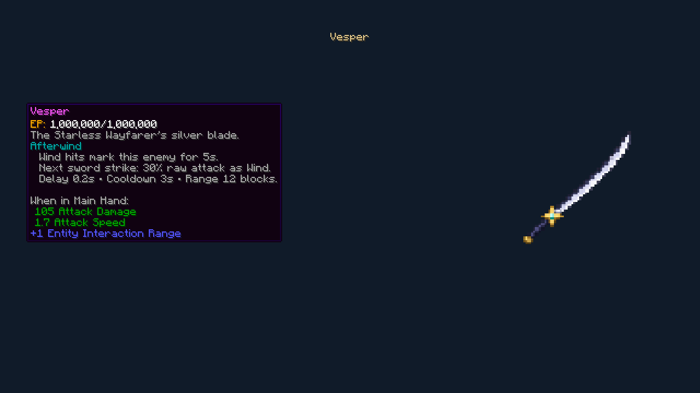
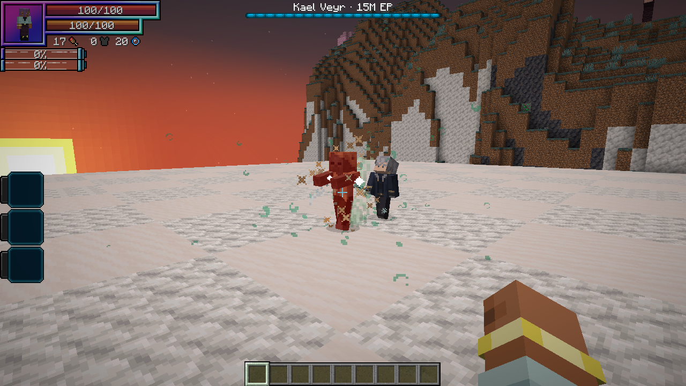
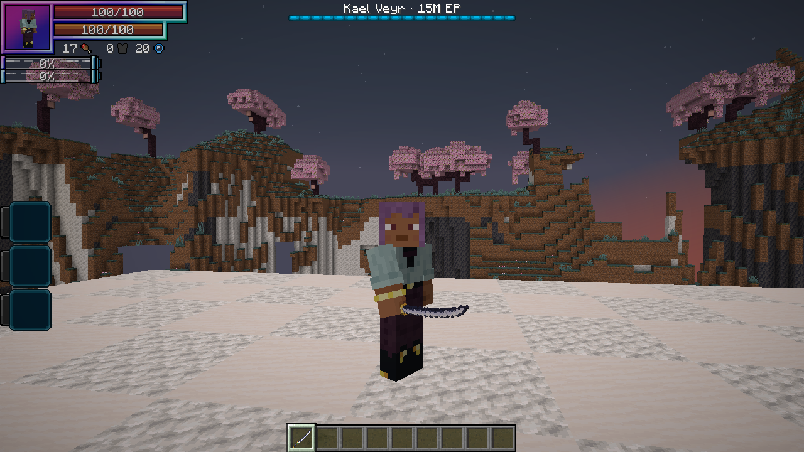
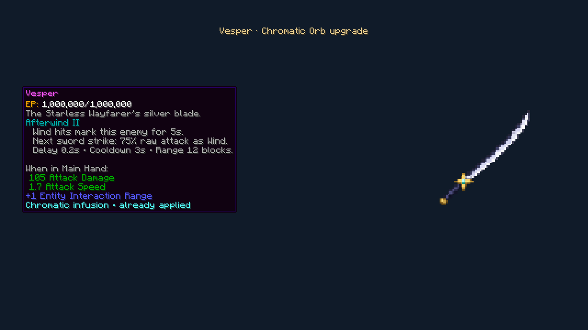

Kael’s silver sword, with a navy spine and a gold star guard. Defeating Kael drops one Vesper with Afterwind I.
Compared with Valentine’s Night Rose from Tensura: Not Enough Bosses, Vesper has 105 vs. 90 damage, the same attack speed and reach, and 10% more durability. That addon is not required.

Afterwind
While holding Vesper, successfully dealing Wind damage marks that enemy for 5 seconds. Your next direct sword strike against that enemy triggers a Wind cut after 0.2 seconds.
The cut deals 30% of your raw attack attribute, then uses normal Wind boosts, resistances and defenses. It has a 3-second cooldown per wielder. Marks do not stack, and it only strikes that enemy. The cut can follow the enemy’s movement within 12 blocks; switching weapons, death or changing dimension cancels it. There is no extra aura or magicule cost.

Damage recorded by Tensura’s training dummy also counts, even though its HP stays full.

Chromatic Orb
A Chromatic Orb raises Afterwind to level II, increasing its raw-attack coefficient from 30% to 75%. Delay, cooldown and mark duration remain the same.
